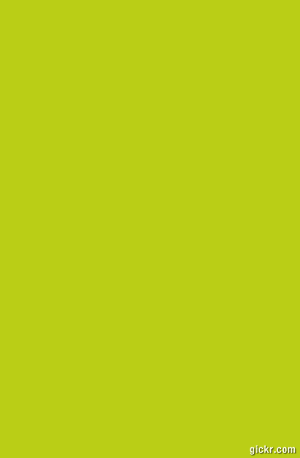

Wireframes for the Web
Bam!© is an online wireframe tool which allow users to build their own websites visually using various elements provided. Users can drag and drop elements onto a canvas, which replicates their webpage. Users can add, delete, move, and resize these elements, giving them full power to design. As users are visually building their sites, Bam!© generates the code, which users can download and use. Bam!© also allows their users to create their own elements by combining the different widgets provided.

Features
Creating Your Own Elements
This feature allows our users to create their own elements by combining different elements together! This allows users to have more freedom and the ability to design elements specific to their site.
Interactive Elements
Users are able to change the look and feel of elements based on different actions. For example, users can see the element in different views based on whether the elements was clicked or hovered over.
Keyboard Shortcuts
This feature gives users the power and ability for quick and easy editing. With our built-in keyboard short-cuts, users can undo, redo, and even select all elements with our simple short-cuts.
Code Generator
This feature gives the user the ability to download the HTML code, based on the webpage layout they have created using BAM!© giving the user the ability to use the HTML code for their website.
Style Agnostic Design
The Style Agnostic Design feature is a simple style visualization of elements. It will give users the advantage of concentrating on the layout of elements and their interactions on the webpage. This will take away from users worrying about what the webpage will visually look like.


Our Audience
Bam!© is designed for users of all levels of experience.
It is a great tool for novice web developers who are just beginning to get a feel of HTML. With our simple elements provided, these users can quickly and swiftly build a simple website.
For the more advanced web developers, Bam!© provides many special features which makes web development simpler. These users can develop and create their own elements using given elements that are provided and even simulate event handling with a simple click of a button.
Our wireframe tool is not just limited to web developers and designers. Users who simply want a tool to organize a presentation or format a document may find Bam!© to be user-friendly and efficient.

|

|

|
Timeline
Basic Functions
Our focus is on the simplest elements of a wireframe tool: drag and drop into a canvas. We will first implement the ability to drag, drop, and move a simple element onto a canvas. Afterwards, we will focus on implementing resizing, selecting, and deleting the object(s) on the canvas.
Basic Elements
In this phase, we will be expanding our library of basic elements. By the end of this phase, users will be provided with a vast library of elements they can begin to design their applications with. They will also be able to add the simple elements to their canvas and do simple edits to these elements; such as, the ability to edit a text box or the name of a button.
Utilities
We will include additional functionalities such as copy, paste, select all, undo, redo, etc. With these functionalities, it makes editing easier and more efficient.
Element Builder
This feature allows user to add elements to our library. It will help users build more complex elements which serves as a their own "shortcuts" when designing their webpage.
Interactions
This feather will allow a user to control the behavior of their webpage based on the different events that are happening or the different state which the page may be in. This will mirror effects created in javascript such as: a button changing color when hovered over, or a different page layout upon user being logged in or not.
???
Profit!
Concerns
Time
- Being limited to build BAM!© in 5 weeks, it is possible that we may not be able to complete all of the stages presented in the time line.
- We may not be able to provide all the features and elements users hope to find when using our wireframe tool.
- We are also concerned that due to time constraints we will end up mimicking parts of other wireframe tools. This will take away from making our wireframe tool unique from other groups and existing wireframe tools.
Browsers
- Because each browser renders html pages different, there is always the possibility of there being a browser specific bug. Even if it may seem like the webpage renders prefectly on one browser, we cannot guarantee that it will render the same way in another.
- Browser versions are also a big concern. If the browser currently used is not updated to it's latest version, some design styles/scripts might be incompatible with the current browser version and it cause the rendered website to seem buggy.
General
- We do not wish for our wireframe tool to produce application designs SO detailed that it would overstep into the boundaries of a graphic designer.
- We also wouldn't want to make our elements TOO interactive so that it would restrict the skills of a front-end developer.
We're Starfox!
Jessica Yick
Most classes I've taken are more about the theory, but sadly that is not the reason why I wanted to become a computer scientist. I have always been interested in website developement and software developement because I would be able to see the result of the time and commitment I would put into a project. So from this class, I am hoping to get a strong fundamental in web client languages. I am hoping to learn not only javascript and how it works(which I've wanted to for a long time) but also how to properly code and design websites.
Jackson Callaway
Web development is totes awesome. It's a shame UCSD only has one client-side class and it's onlly available in the summer. Web dev feels more creative and human than most other CS disciplines. I'd really rather not be locked away in a lab or office all day working on DBA or embedded systems. In web dev, being anti-social and close-minded is not an option -- the rules are always changing and there's always something new to learn. I can't wait to graduate so I can dedicate myself full-time to studying and advancing the web.
Elizabeth Ching
Currently a 4th year at UCSD with a double major in Computer Science and Economics. What I hope to get out of this class: an A would be nice. It's also good to learn some HTML/CSS/javascript, stuff we see every day but know nothing about. Finding a class that teaches these scripting/style langugages is rare at UCSD; all the more reason to take the class when you know it's being taught by someone who knows their stuff.
Jose Flores
Taking this class will benefit me because i will be ale to apply the knowledge i gain in the class not only in future web development classes but as well as in future careers. I find this class interesting because in client-side Web, we focus and have to think like users in order to develop a web application that the users will use and like. In these 5 weeks i hope to expand my knowledge of HTML, javascript, and css. I also look forward to working in a industry and team enviroment. More importantly i look forward in producing. along with my teammates, a functional and unique wireframe tool by the end of this summer session.